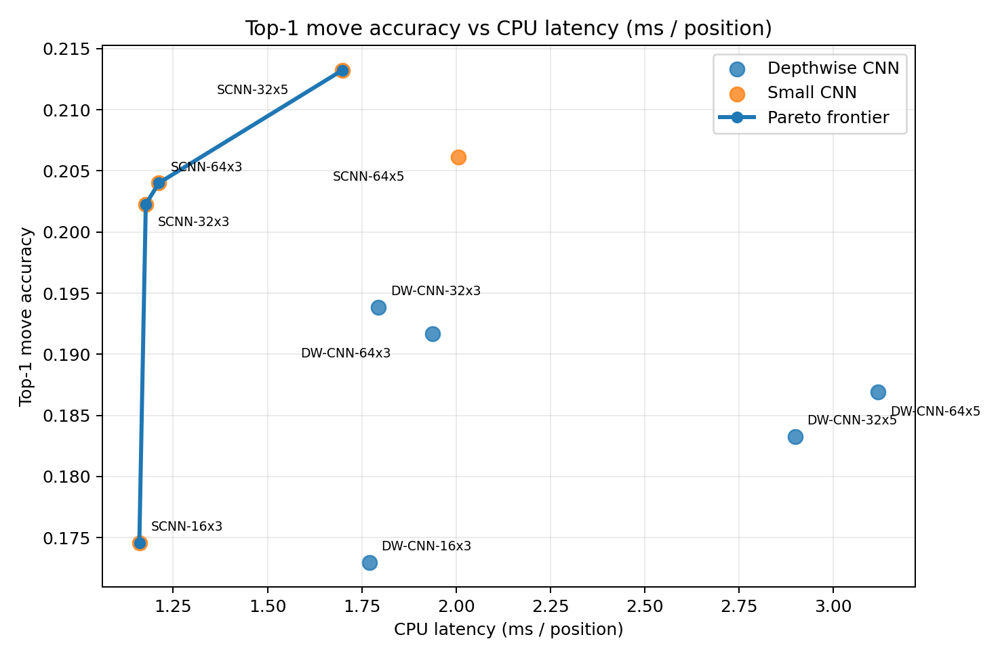
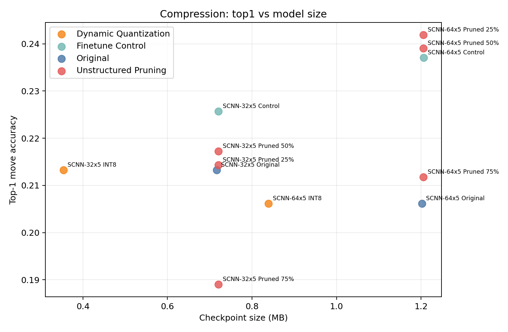
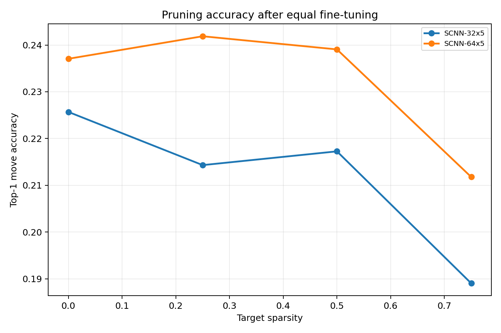

Research Question
How much Stockfish move and value knowledge can compact CNN students preserve, and what accuracy-efficiency tradeoffs result from quantization and pruning?
Dataset and Teacher
- Lichess standard rated games, May 2026, streamed directly from
.pgn.zst. - Stockfish 18 teacher at depth 10 with MultiPV 5.
- Policy targets are soft distributions over teacher candidate moves from the side-to-move perspective.
- Value targets use White perspective:
tanh(eval_cp / 1000). - Final test set: 7,475 positions from 220 games never seen in training or validation.
Corrected Experimental Design
Training objective
Loss = policy soft cross-entropy + value MSE
Student Architectures
Two families were tested at five channel/depth settings each:
- Small CNN: standard convolutional blocks.
- Depthwise CNN: depthwise-separable blocks intended to reduce parameter count.
- Configurations: 16x3, 32x3, 64x3, 32x5, and 64x5.
Architecture Accuracy vs Latency

Held-Out Results
| Model | Top-1 | Top-3 | Value RMSE | Latency |
|---|---|---|---|---|
| SCNN-32x5 | 21.32% | 41.10% | 0.240 | 1.70 ms |
| SCNN-64x5 | 20.62% | 42.66% | 0.239 | 2.01 ms |
| SCNN-64x3 | 20.40% | 40.78% | 0.231 | 1.21 ms |
| SCNN-32x3 | 20.23% | 38.97% | 0.227 | 1.18 ms |
Compression Accuracy vs Size

Fair Pruning Comparison

Key Findings
Small CNNs won. Every tested depthwise student was below 19.4% top-1, while four standard CNNs exceeded 20%.
INT8 is compact, not faster here. Accuracy was unchanged and size fell from 0.72 to 0.35 MB for SCNN-32x5, but measured CPU latency increased.
Moderate pruning is resilient. SCNN-64x5 retained its fine-tuned accuracy through 50% sparsity; both models declined sharply at 75%.
Fine-tuning is a major confound. The SCNN-64x5 control improved from 20.6% to 23.7% without pruning.
What Compression Actually Bought
| SCNN-32x5 | Top-1 | Size |
|---|---|---|
| Original | 21.32% | 0.72 MB |
| INT8 | 21.32% | 0.35 MB |
| Fine-tune control | 22.57% | 0.72 MB |
| 50% pruned | 21.73% | 0.72 MB |
Conclusion and Next Steps
For these small chess students, architecture choice mattered more than naive compression. Dynamic quantization offers a clean storage win; moderate pruning preserves accuracy but needs sparse execution support to deliver deployment gains.
- Repeat top configurations across random seeds.
- Use quantization-aware training and static convolution quantization.
- Benchmark sparse kernels and structured channel pruning.
- Evaluate playing strength through fixed-budget engine matches.